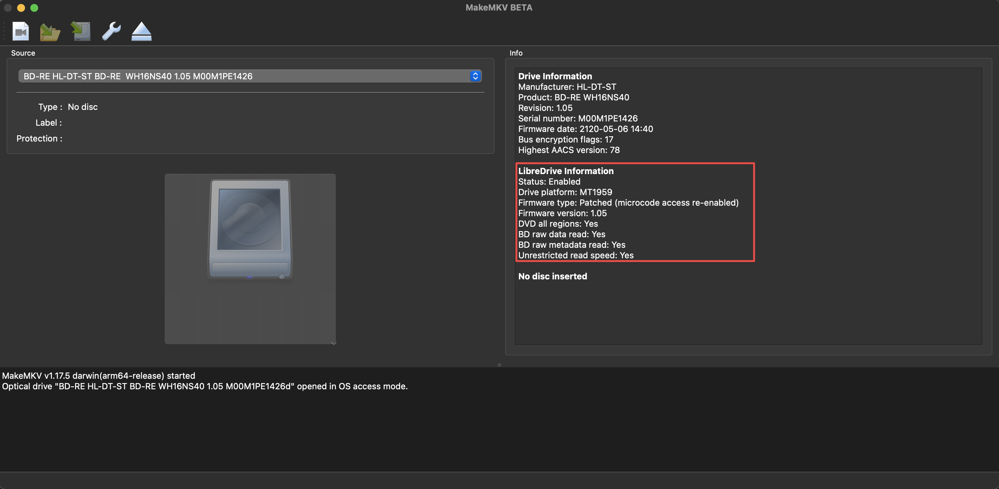

How To Flash Libre Firmware on to an LG Bluray Drive on macOSX
I recently wanted to update the firmware of my LG WH16NS40 to the LibreDrive firmware. This would allow the drive to read discs from all regions and also allow for faster read access. It is also needed to read UHD discs.
My MakeMKV drive details before the update:
Drive Information
OS device name: /dev/rdisk5
Current profile: BD-ROM
Manufacturer: HL-DT-ST
Product: BD-RE WH16NS40
Revision: 1.05
Serial number: M00M1PE1426
Firmware date: 2120-05-06 14:40
Bus encryption flags: 17
Highest AACS version: 78
LibreDrive Information
Status: Possible (with patched firmware)
Drive platform: MT1959
Harware support: Yes
Firmware support: No
Firmware type: Original (patched version available)
Firmware version: 1.05
DVD all regions: Possible (with patched firmware)
BD raw data read: Possible (with patched firmware)
BD raw metadata read: Possible (with patched firmware)
Unrestricted read speed: Possible (with patched firmware)
No disc insertedTo see if your drive is supported look for the Status: Possible (with patched firmware) comment. The MakeMKV forums have a full list of LibreDrive firmware supported drives, if you want to purchase a new one.
As always this information is for reading and encoding discs you own and not for any other purposes.
Also use at your own risk; these steps worked for me and it may not work for you even if you have the same drive. Check the MakeMKV forums for more information if you are unsure.

This is a summary of steps from various MakeMKV forums posts and the “Ultra HAX0R” GUIDE V2 for encrypted firmware to Make your Drive UHD friendly YouTube video.
Before you start, ensure the value of your Drive platform is MT1959:
Drive platform: MT1959Steps
Download and extract the all you need firmware pack
Locate the firmware for your drive model in the pack. For my drive it was at
mk-firmware-pack-20200720/MK/HL-DT-ST/WH16NS40-NS50/HL-DT-ST-BD-RE_WH16NS40-NS50-1.05-NM00900-212005061440.bin.The date on the firmware should roughly match that displayed in the MakeMKV drive details. In the MakeMKV details section the firmware date was listed as
Firmware date: 2120-05-06 14:40, which maps to212005061440, which is the date at the end of the bin file:-212005061440.bin.Generally the format seems to be:
TYPE_OF_DRIVE-DRIVE_MODEL-FIRMWARE_VERSION-NOT_SURE_WHAT_THIS_IS_DATE.binFor my drive is it:
HL-DT-ST-BD-RE-WH16NS40-NS50-1.05-NM00900-212005061440.binThe
Ultra HAX0R" GUIDE V2 for encrypted firmware to Make your Drive UHD friendlymentions that some newer firmware needs to be flashed encrypted. A rudimentary list is given below. Please check the MakeMKV forums for a more updated list.Know Encrypted firmware:
- WH16NS60 1.03
- WH16NS40 1.05 <– my firmware
- WH14NS40 1.05
- BH16NS55 1.05
- BU40N 1.04
- Find location of MKV installation; usually it’s under
/Applications/MakeMKV.app - Look for an executable named
makemkvconunder the MakeMVK installation folder above:/Applications/MakeMKV.app/Contents/MacOS/makemkvcon - Find the name of the drive you want flash with:
makemkvcon f -lOn my machine it’s /IOBDServices/8A6BA6DF:
00: /IOBDServices/8A6BA6DF
HL-DT-ST_BD-RE__WH16NS40_1.05_212005061440_M00M1PE1426- Verify the drive can be used with the tool using the following:
makemkvcon f -d DRIVE helpFor example:
makemkvcon f -d /IOBDServices/8A6BA6DF helpYou should see something similar to the following:
MTK19xx firmware module v1.30
Commands:
dump [auto|full|user]
Dumps firmware image
dump full - dumps full rom image (if not disabled in firmware)
dump user - dumps non-volatile user data
dump auto - dumps full image if possible, user data otherwise
rawflash [<flag>,<flag=value>,...]
Sends the image and flashing flags to drive
for flashing in self-update mode
flags:
main - flashes main firmware (this is the default)
full - flashes boot loader and main firmware (Caution!!!)
de - sets DE byte in image
enc - encrypts firmware before sending to drive
slim - force USB slim drive handshake- Run the following command to flash the new firmware to your drive. Use the
encparameter if your drive is listed as having encrypted firmware as mentioned above. Check the forums if you’re unsure about your drive.

makemkvcon f --all-yes -d /IOBDServices/8A6BA6DF rawflash enc -i LOCATION_OF_FIRMWARE/LG-BD-RE-WH16NS40/HL-DT-ST-BD-RE_WH16NS40-NS50-1.05-NM00900-212005061440.binExample output:
Reading input file LG-BD-RE-WH16NS40/HL-DT-ST-BD-RE_WH16NS40-NS50-1.05-NM00900-212005061440.bin
Flashing flags = 0x0 : 0 0 0 0 : ---- ---- ---- ----
Sending image in encrypted format
Current Drive ID: HL-DT-ST_BD-RE__WH16NS40_1.05_212005061440_M00M1PE1426
Ready to write drive flash memory. (auto confirmed)
Operation started: Sending flash image to drive
100% Operation finished
Operation started: Programming flash
100% Operation finished
Program Flash NG 06/29/00
Command produced error code 0x82062900
It looks like it encountered an error:
Command produced error code 0x82062900
A quick look through the MakeMKV forums mentions that if you see Command produced error code 0x82062900 it can be safely ignored. Phew!
- Launch MakeMKV and you should see LibreDrive support enabled:

- Use your drive through MakeMKV and ensure it’s working as expected.
I managed to read a Bluray disc at faster speeds than usual, at least for some of the time. I have yet to try discs from different regions.